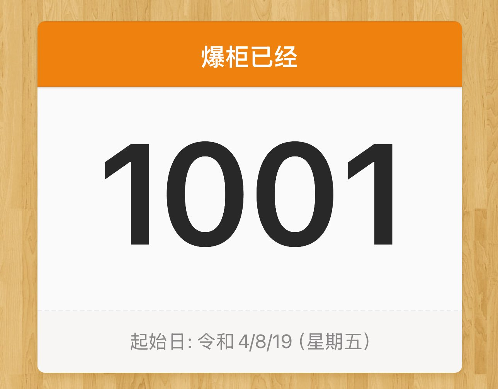

困困鱼崽仔小云
@kunkunyuzaizai
@Fujiwarahermia3 写的东西是负能量的东西

🍄Crete
@Fujiwarahermia3
爆柜一千天了
我还记得这个暑假的晚上出去和前女友很满足地吃了一顿拉面，面里有恰到好处的溏心蛋和外壳炸得酥脆的猪排，完全不知家里此时我妈在卧室里哭，我爸正坐在客厅里等我
他们趁我不在的时候翻了我的书包，彻彻底底地，找到了开到一半的诊断和一板补子
从此菇生翻篇，再也无法生活在那里 https://t.co/Tmjf0tg1Wz